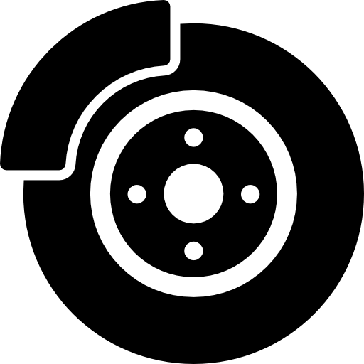

-
Freios
A checagem e troca dos freios é fundamental para evitar acidentes e poder seguir em segurança.
-
Troca de óleo

Um bom óleo no motor garante maior vitalidade e eficiência do motor.
-
Suspensão

A suspensão em dia de um veículo permite um conforto maior a cada viagem.
Além de contribuir para o bom uso de todos os componentes.